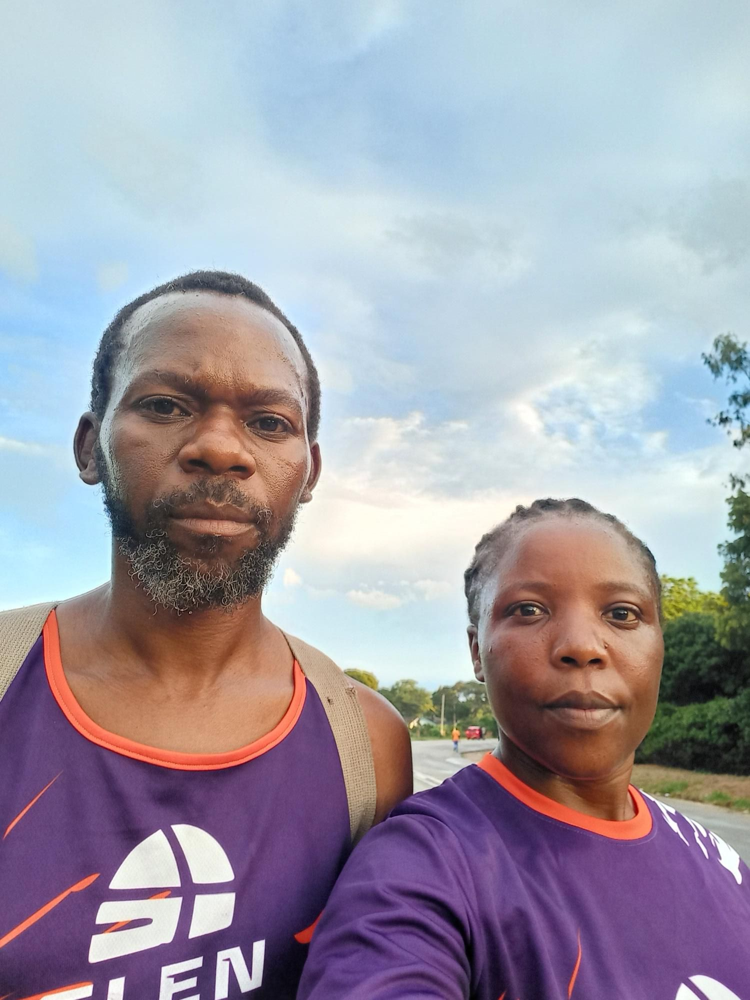
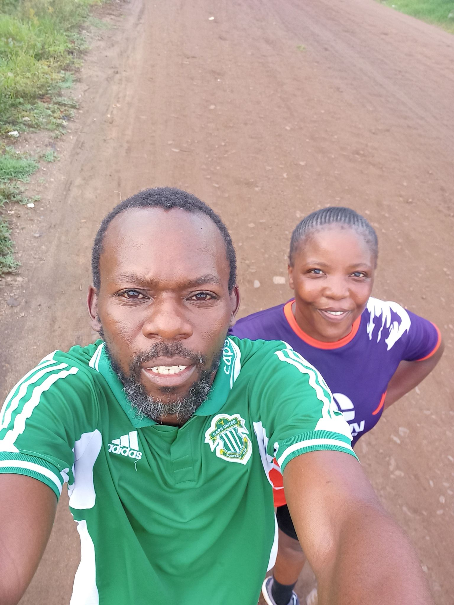
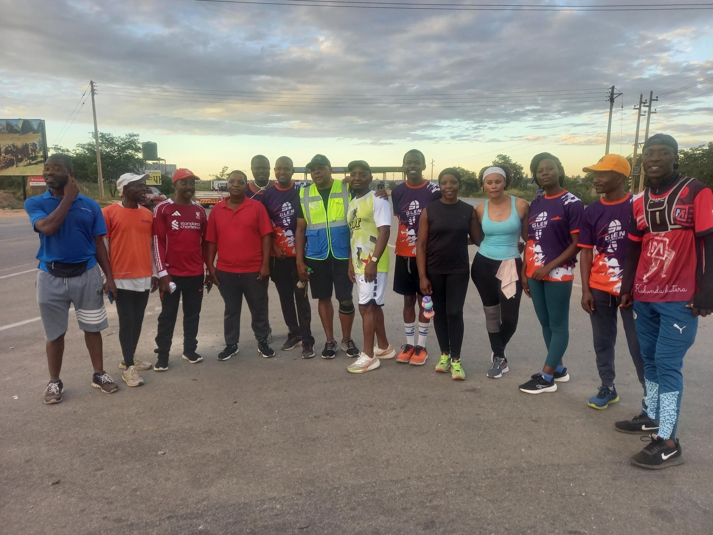
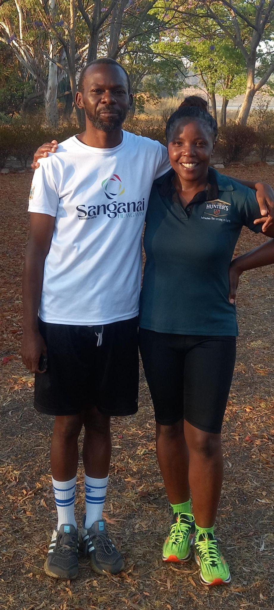

And Then We Discovered Running

By Humphrey and Linda
Published on the Humphrey and Linda's blogs
There is a season in life that many people know but few talk about openly. Everything feels heavy at once. The weight does not come from one place it comes from all directions, quietly and persistently, until one day you realise you have stopped believing that things can be different. That you can be different.
This is the story of how we found our way back. And how running, of all things, was the path.
Humphrey's Story
I was 37 when we started running. I want to say that plainly, because it matters to the story.
Life had been throwing a great deal at us — the kind of accumulated pressure that does not announce itself all at once but builds slowly until it becomes the background noise of everything. Work was draining. Remote work had blurred the line between being at the desk and never leaving it. I would sit for hours, deep in projects, and by the end of each day I had very little left of myself. Not just physically, something deeper was being worn away.
I was beginning to lose hope. Not in any single thing, but in a quieter, more unsettling way. I was beginning to wonder whether I still had it in me. Whether the best of what I could be and do was already behind me.
Then my boss said something offhand during a stand-up meeting. He mentioned that he started every morning at 4:30am with a run. No gym, no coach — just him and the road in the early dark. I went home and told Linda.
We decided to try.
The Beginning
We had no gear, no plan, and no idea what we were doing. We picked landmarks and ran to them. "Let's go to OK Shops." "Let's turn back at the Telone Exchange." That was the extent of our training programme.
I wore gym shorts and a vest. Linda ran in a pair of jean shorts. We did not know about running shoes, or warm-ups, or how to land your foot properly on the edge of a tarmac road. I found that last one out the hard way — a twisted ankle, a lesson learned.
When our friend Mildred later introduced us to a running app, we discovered we had already been covering around 4.8 kilometres. That first 2.5km felt manageable. The return leg was a different story entirely. It was a battle every time, and for a good while Linda was ahead of me — pulling away while I worked just to keep up.
But I kept going. And something began to shift.

The Moment Everything Changed
It was not a dramatic moment. There was no finish line, no medal, no audience.
It was just me, one ordinary morning, realising that I had run further than I had ever run before. That my body — the same body I had never thought of as athletic, the body of a man who had never been into fitness — had carried me there. And could carry me further still.
That realisation did something to me that I had not expected. It was not just about running. It was about everything. If I could do this — something I had never done, at 37, in the middle of one of the harder seasons of my life — then what else was possible? The "I can do it" that running planted in me did not stay on the road. It followed me home. Into work. Into the way I faced each day.
I began to believe in myself again.
The Comments We Ignored
Not everyone was supportive. Some of the men in the neighbourhood would shout from the roadside as we passed — mocking Linda about her weight, questioning why she was exercising at all. It was unkind. Our answer was simple: earphones in, volume up, eyes forward. We kept going until the comments stopped mattering.
Finding Our People
Through a local running club's WhatsApp group, we eventually connected with two members who ran in our own neighbourhood. They welcomed us and introduced us to what we now call the Trabablas route. They joke to this day that they are the ones who brought us to 10K running — though the truth is we were already there. We simply had not been recording our runs.
It was with this pair that the idea of Glen Striders was first spoken aloud. Others joined us. The club became real. And we have not stopped since.

What Running Has Given Me
The COVID-19 lockdowns paused us, as they paused the world. But when the roads opened again, we laced up and went back. Running had become too much a part of who we were to leave behind.
The changes are real and they are lasting. I have shed considerable weight and maintained it. I wake at 3:45am on weekdays without an alarm telling me to want to. Linda tells me my posture has changed — the way I stand, the way I walk. She is probably right.
But the most important change is the one that started it all. I came to running as someone who was beginning to doubt himself. I stayed because running answered that doubt with evidence, kilometre by kilometre, morning by morning.
I am stronger than I thought. That is what running taught me.
Linda's Story
Linda — this is your space. Write in your own voice. What was life like for you during that heavy season? What made you want to run — or agree to try? What did those early mornings feel like from your side? What has running given you personally? There are no rules. Just your story, in your words, and I will shape it into the same style as Humphrey's section above.
A Word to Anyone Reading This
We are not coaches or athletes. We are two people who found something that helped, and who want others to know that it is available to them too.
If life has been heavy lately, if you have been moving through your days carrying more than feels manageable, if you have started to wonder whether you still have what it takes we want to say this to you directly:
You are stronger than you think. Sometimes you just need a road and a reason to find out.
You do not need the right shoes yet. You do not need a plan. Pick a landmark and run to it. Then come back.
We promise, it gets easier. And so does everything else.

— Humphrey and Linda Glen Striders Zimbabwe https://glenstriders.co.zw